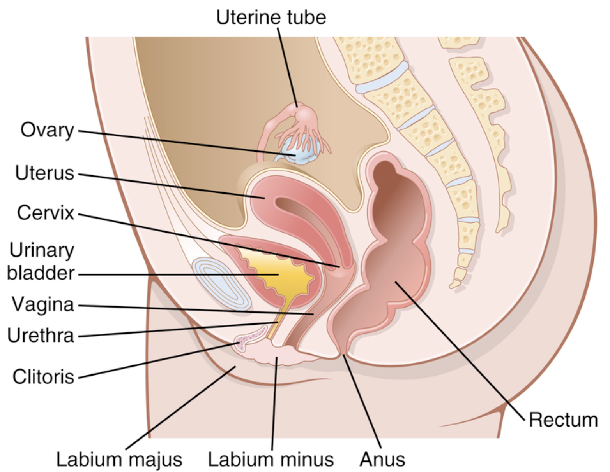
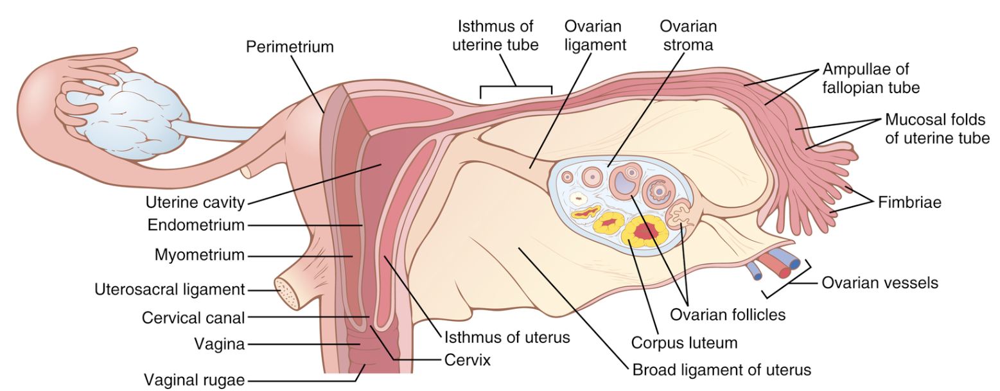

Fungsi reproduksi wanita dapat dibagi menjadi 2 fase besar:
(1) persiapan tubuh wanita untuk pembuahan (konsepsi) dan
kehamilan, dan
(2) masa kehamilan itu sendiri.
Subbab ini membahas persiapan tubuh wanita untuk kehamilan, sementara subbab setelah ini (14.9) menyajikan fisiologi
kehamilan dan
persalinan.
Gambar 14.8-1 dan 14.8-2 menunjukkan organ-organ utama dari saluran reproduksi wanita, termasuk di dalamnya ovarium, tuba fallopi (disebut juga tuba uterina), uterus (rahim), dan vagina. Reproduksi dimulai dengan perkembangan ova (lebih dari satu sel telur) di ovarium. Pada pertengahan setiap siklus seksual bulanan, ovum (satu sel telur) dikeluarkan dari folikel ovarium ke dalam rongga perut dekat ujung fimbriated terbuka dari kedua tuba fallopi. Ovum ini kemudian melewati salah satu dari tuba fallopi tersebut menuju uterus; ovum yang telah dibuahi oleh sperma akan tertanam (implantasi) di dalam uterus, tempat di mana hasil pembuahan tersebut berkembang menjadi fetus (janin), ari-ari (plasenta), dan membran fetus—dan akhirnya menjadi bayi.
xxxxxxxxx.
xxxxxxxxx.
.png)
xxxxxxxxx.
.png)
xxxxxxxxx.
Sumber
1. Hall, John, E. and Michael E. Hall. Guyton and Hall Textbook of Medical Physiology. Available from: Elsevier
eBooks+, (14th Edition). Elsevier - OHCE, 2020.